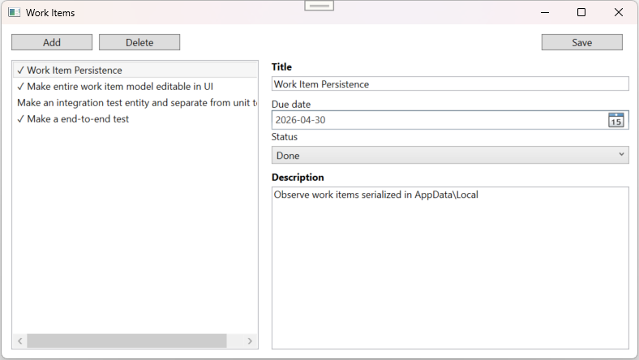
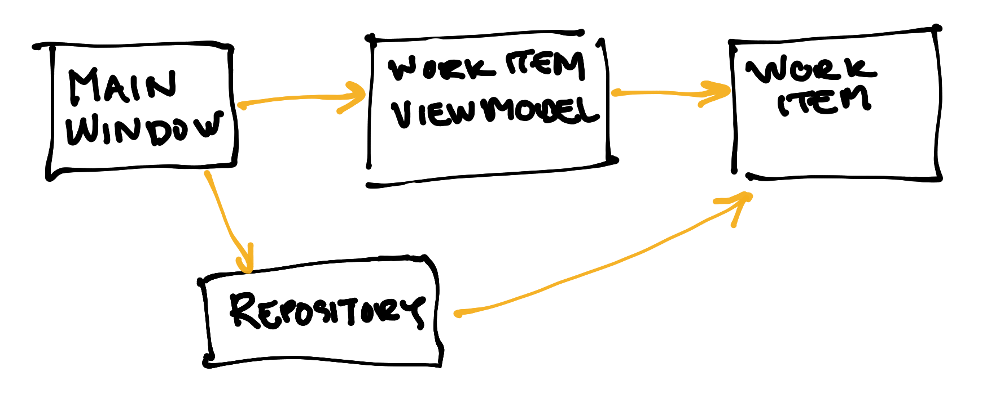
This WPF application uses the MVVM pattern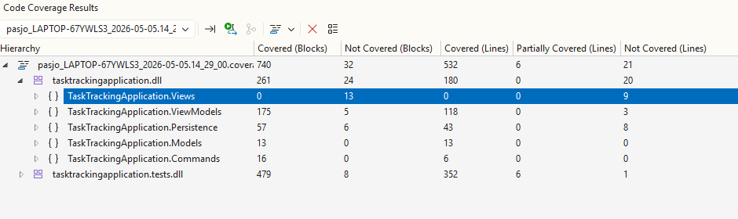
(Kent C. Dodds) I've heard managers and teams mandating 100% code coverage for applications. That's a really bad idea. [...] I should mention that almost all of my open source projects have 100% code coverage.
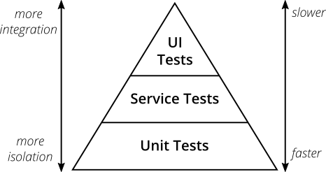
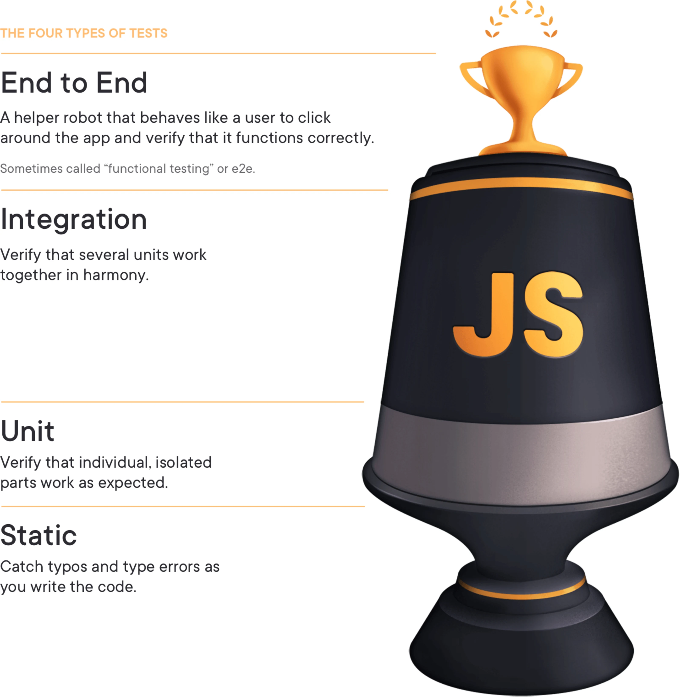
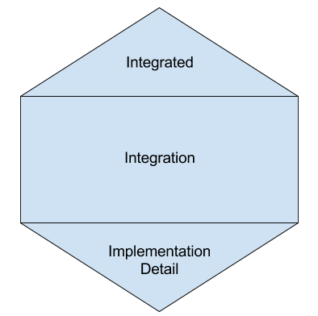
(Succeeding with agile, Mike Cohn, 2009)
(The Testing Trophy and Testing Classifications, Kent C. Dodds, 2021)
(Testing of Microservices, Spotify, 2018)
Write tests with a high ROI!
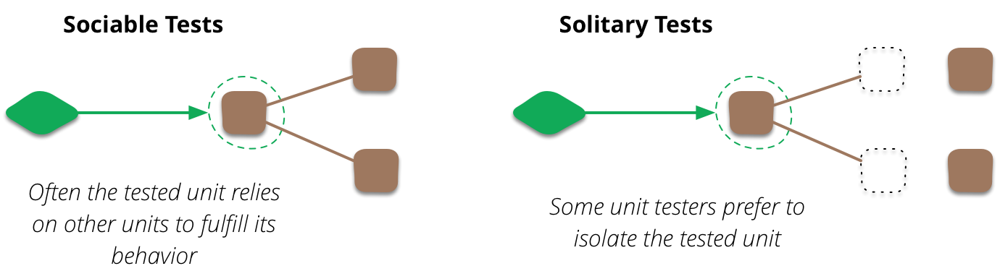
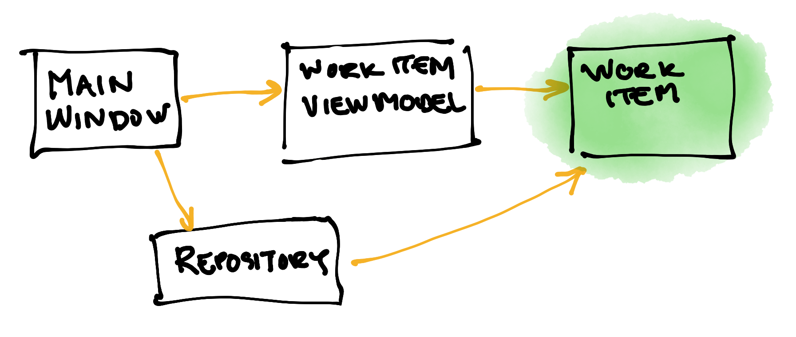
WorkItem.cs
namespace TaskTrackingApplication.Models
{
public enum WorkItemStatus
{
Todo,
Doing,
Done,
}
public sealed class WorkItem
{
public Guid Id { get; init; } = Guid.NewGuid();
public string Title { get; set; } = "";
public string Description { get; set; } = "";
public WorkItemStatus Status { get; set; }
public DateTime? DueDate { get; set; }
}
}
TestWorkItem.cs
namespace TestTaskTrackingApplication.Models
{
internal class TestWorkItem
{
[Test]
public void TestIdIsAssigned()
{
var item = new WorkItem();
Assert.That(item.Id, Is.Not.EqualTo(new Guid()));
}
[Test]
public void TestCreation()
{
var id = Guid.NewGuid();
var name = "Test";
var words = "Description of item";
var progress = WorkItemStatus.Doing;
var distantFuture = DateTime.MaxValue;
var item = new WorkItem
{
Id = id,
Title = name,
Description = words,
Status = progress,
DueDate = distantFuture,
};
Assert.Multiple(() =>
{
Assert.That(item.Id, Is.EqualTo(id));
Assert.That(item.Title, Is.EqualTo(name));
Assert.That(item.Description, Is.EqualTo(words));
Assert.That(item.Status, Is.EqualTo(progress));
Assert.That(item.DueDate, Is.EqualTo(distantFuture));
});
}
}
}
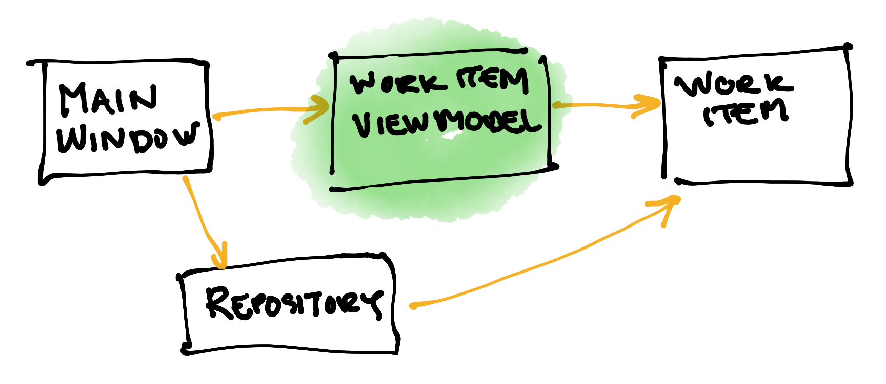
WorkItemViewModel.cs
using TaskTrackingApplication.Models;
namespace TaskTrackingApplication.ViewModels
{
public sealed class WorkItemViewModel : ViewModelBase
{
private readonly WorkItem _model;
public WorkItemViewModel(WorkItem model)
{
_model = model ?? throw new ArgumentNullException(nameof(model));
}
public Guid Id => _model.Id;
public string Title
{
get => _model.Title;
set
{
if (SetModelProperty(_model.Title, value, (v) => _model.Title = v))
{
OnPropertyChanged(nameof(DisplayTitle));
}
}
}
public string Description
{
get => _model.Description;
set => SetModelProperty(_model.Description, value, (v) => _model.Description = v);
}
public WorkItemStatus Status
{
get => _model.Status;
set
{
if (SetModelProperty(_model.Status, value, (v) => _model.Status = v))
{
OnPropertyChanged(nameof(IsDone));
OnPropertyChanged(nameof(DisplayTitle));
}
}
}
public DateTime? DueDate
{
get => _model.DueDate;
set
{
if (SetModelProperty(_model.DueDate, value, (v) => _model.DueDate = v))
{
OnPropertyChanged(nameof(IsOverdue));
}
}
}
public WorkItem ToModel() => _model;
public bool IsDone
{
get => Status == WorkItemStatus.Done;
}
public bool IsOverdue => DueDate is DateTime due &&
!IsDone &&
due.Date < DateTime.Today;
public string DisplayTitle =>
string.IsNullOrWhiteSpace(Title)
? "(No title)"
: IsDone
? $"\u2713 {Title}"
: Title;
}
}
TestWorkItemViewModel.cs
ViewModelBase.cs
TestViewModelBase.cs
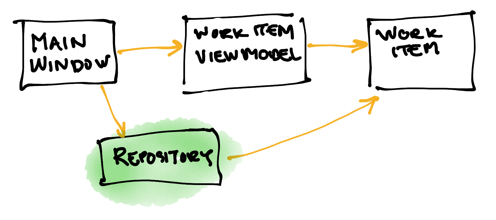
JsonFileWorkItemRepository.cs
TestJsonFileWorkItemRepository.cs
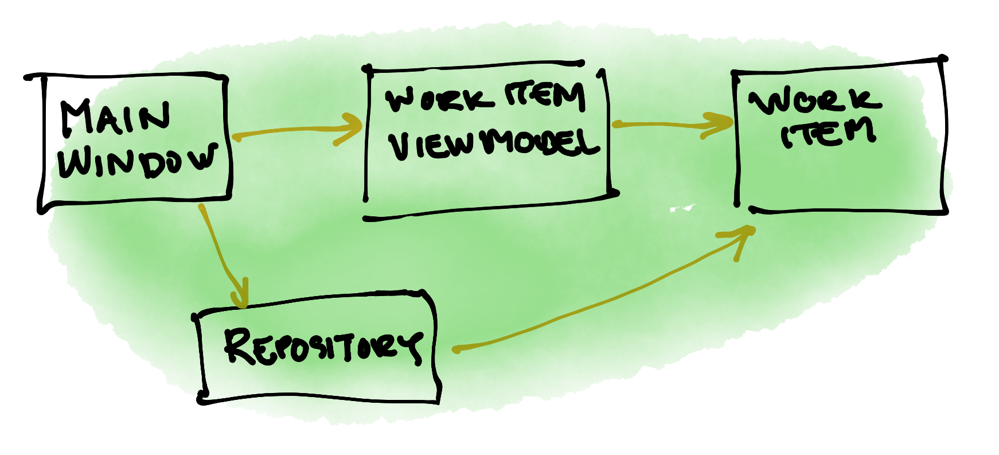
MainViewModel.xaml.cs
MainViewModel.xaml
TestMainViewModel.cs
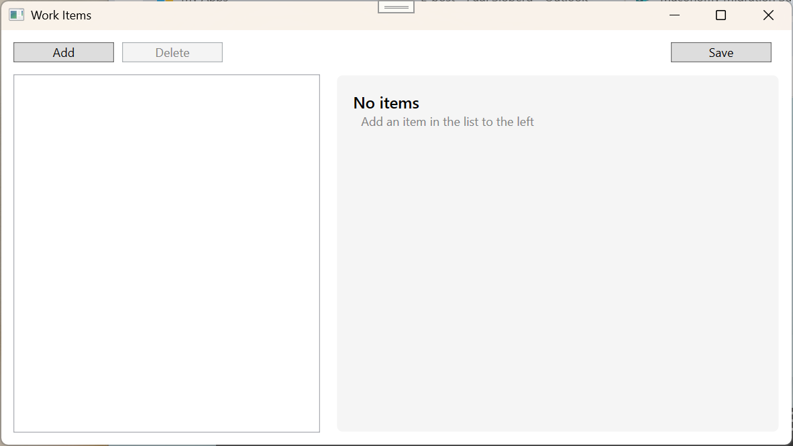 |
|
| starting | empty |
AppStartupTests.cs